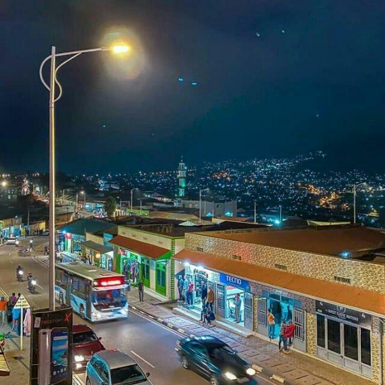

Gisozi is a neighborhood in Kigali, Rwanda, known for its historical significance and cultural attractions. It is home to the Kigali Genocide Memorial, which serves as a reminder of the tragic events that took place during the Rwandan Genocide.

| Detail | Information | Notes | Contact |
|---|---|---|---|
| Opening Hours | 8:00 AM - 5:00 PM | Open daily | +250 788 315 023 |
| Entrance Fee | Free | Donations welcome | +250 788 315 023 |
| Guided Tours | Available | Book in advance | +250 788 315 023 |
| Location | Gasabo District | Kigali, Rwanda | +250 788 315 023 |
| Photography | Restricted | Ask for permission | +250 788 315 023 |
To learn more about the Kigali Genocide Memorial, visit the official website: www.kgm.rw